Кухня Австралии |
|||
|
Пожалуй, национальная кухня Австралии одна из самых экзотичных и разнообразных кулинарных традиций, в которой перемешались вкусовые пристрастия многих народов мира. В разное время выходцы из стран Европы и Азии делали свой вклад в развитие австралийской кухни, принося собственные изюминки и особенности, и тем самым делая её поистине интернациональной. |
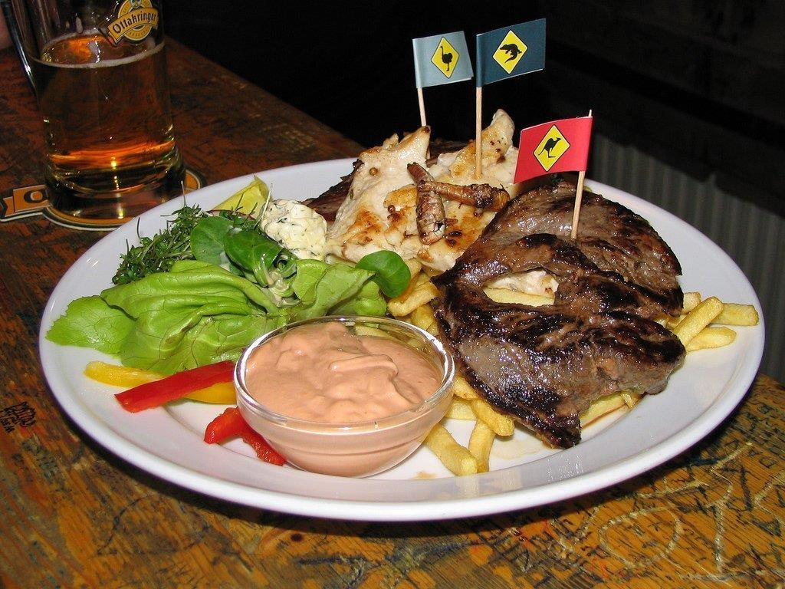 | 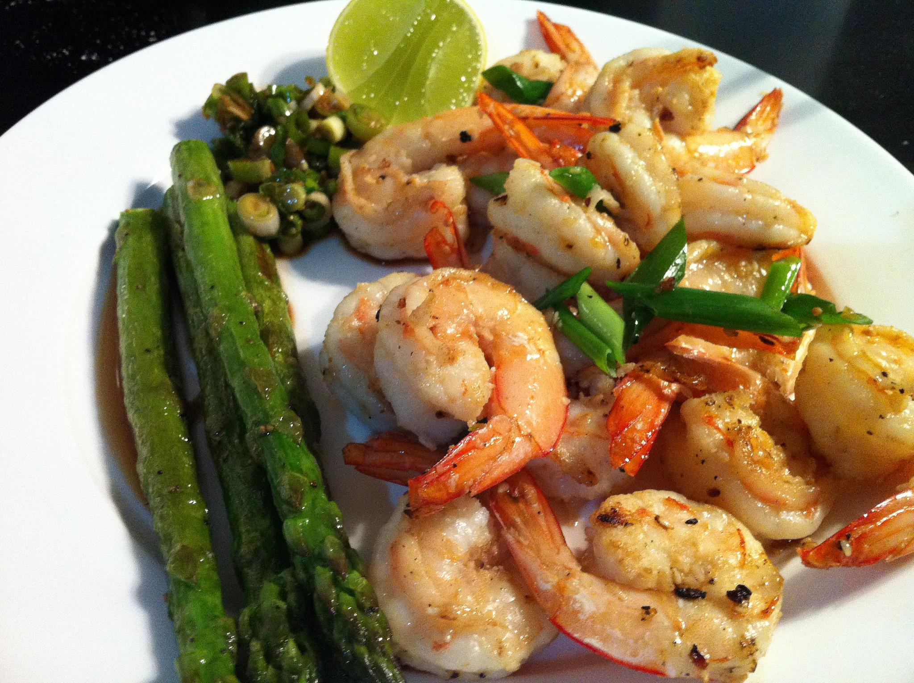 | |
| В австралийском меню активно используются свежая рыба, лобстеры, лангусты, голубые крабы, креветки, пресноводные устрицы и гребешки, а также акульи губы, мальки угрей, которые в обилии продаются в супермаркетах и на рыбных рынках. Австралия – настоящий фруктовый рай. Список фруктового изобилия представляют ароматные яблоки и груши из Тасмании, киви, бананы, ананасы, цитрусовые, папайя, авокадо, манго, личи, персики квандонг. |
|||
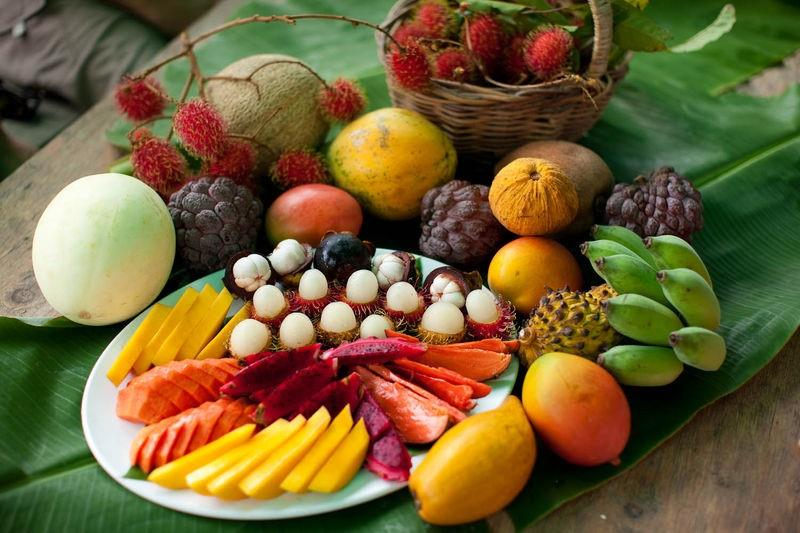 |
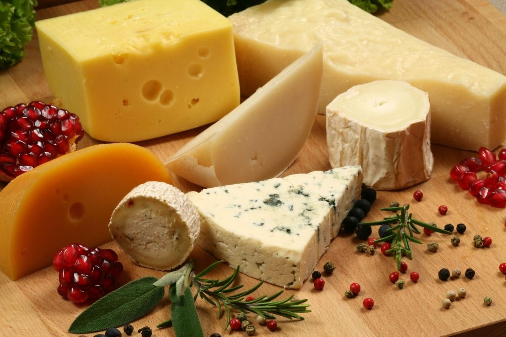 |
||
|
Поражает разнообразие овощей и приправ: различные виды капусты и салата, картофель, фасоль и чечевица, кукуруза, помидоры, шпинат, индийские пряности, лимонный мирт, тасманский перец. Из сельдерея и лука на базе пивного сусла с большим количеством соли готовится любимая австралийцами горько-солёная паста «веджимайт». Что касается десертов, то традиционным австралийским десертом считается торт «Павлова» – торт-безе со свежими фруктами. Изготавливается из безе, взбитых сливок, верхний слой – из ягод или кусочков тропических фруктов: клубника в сочетании с мякотью маракуйи. Назван в честь балерины Анны Матвеевны Павловой, гастролировавшей по Австралии и Новой Зеландии в 1926 году. По версии новозеландцев, шеф-повар ресторана в одной из гостиниц Веллингтона создал этот десерт в 1926 году, чтобы угостить им балерину во время её всемирного турне. |
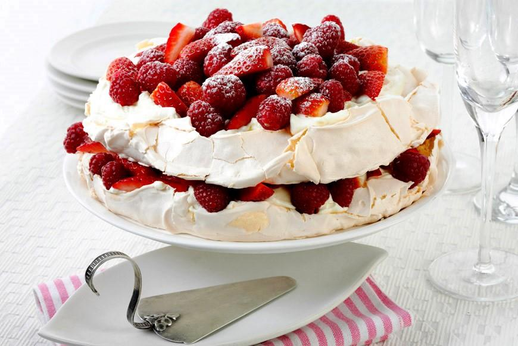 | 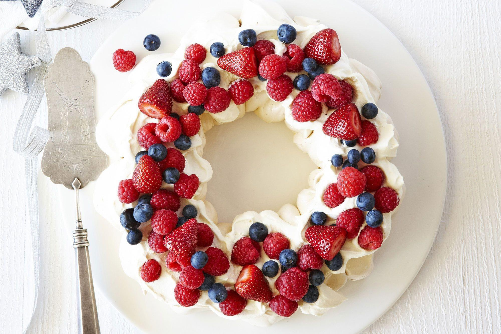 | |
| 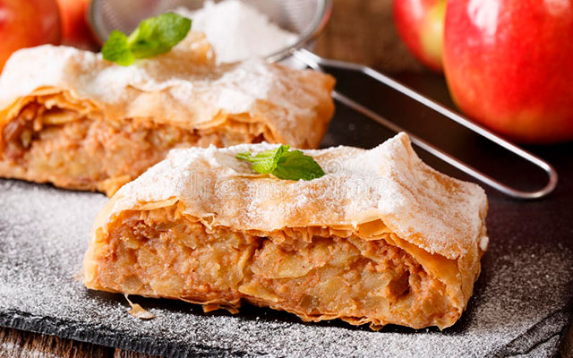 | 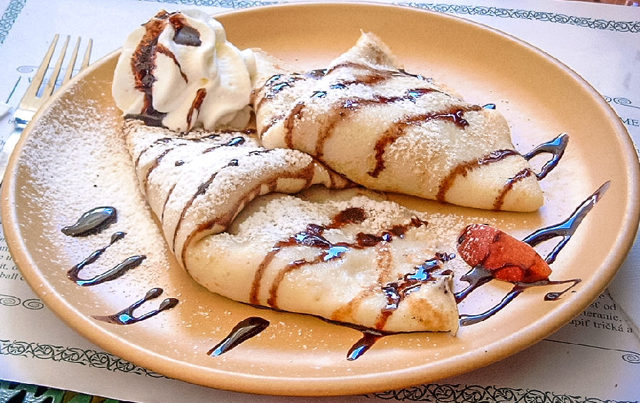 | ||
Печенье АНЗАК – сладкое овсяное печенье, которое готовят из овсяных хлопьев, муки, кокоса, сахара, масла, светлой патоки, соды и кипячёной воды. Печенье названо в честь австралийского и новозеландского армейского корпуса (АНЗАК). Некоторые считают, что печенье было придумано солдатами АНЗАКа из провизии, которая имелась под руками, чтобы скрасить свой скудный паёк. Но большинство всё же уверены, что печенье придумали австралийские и новозеландские женщины, жены и подруги солдат, для своих любимых. Печенье было приготовлено так, чтобы оно смогло перенести долгую дорогу к фронту. Также имеется предположение, что печенье АНЗАК – это вариация шотландской овсяной лепёшки. |
Lamington – бисквит, облитый шоколадной помадкой и обсыпанный кокосовой крошкой. Сначала ламингтоны делались из бисквитного теста с начинкой из клубники или малины. Сегодня их обычно делают без джема, лишь иногда используют взбитые сливки в качестве начинки. Лакомство получило своё название в честь губернатора штата Квинсленд Чарльза Уоллиса Александра Напира Кокрэйн-Бэйлли, который ко всему прочему был бароном Ламингтона. |
||
| 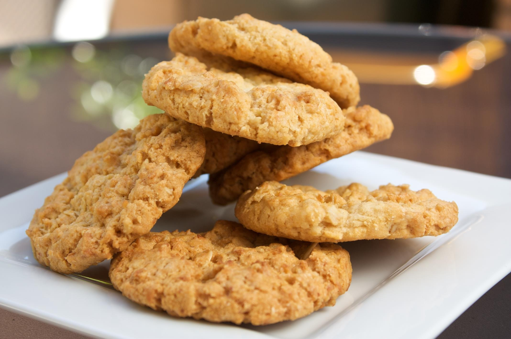 | 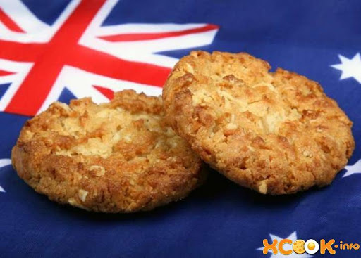 | 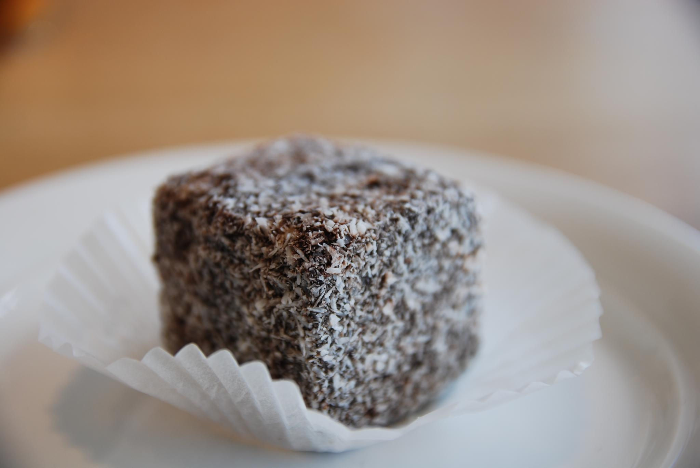 |
|
| Дополнительная информация | |||